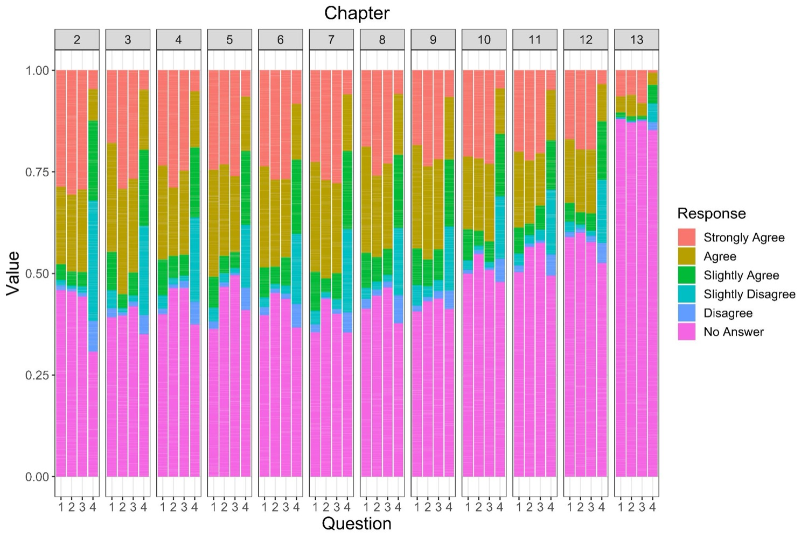

01 · 배경
학습자가 막히는 곳을 데이터로 찾아 달라는 과제
CourseKata는 대학 통계 수업에서 쓰는 온라인 교재입니다. 학습자가 문제를 풀고, 챕터마다 짧은 설문에 답한 기록이 남아 있었습니다. 교재와의 상호작용 대부분이 1~12장에 몰려 있어서 이 구간을 중심으로 봤습니다.
02 · 데이터 점검
분석 전에 이상한 기록부터 확인했습니다
새로운 패턴을 찾는 것도 중요했지만, 눈에 보이는 오류도 학습자의 불편을 보여 주는 단서일 수 있다고 봤습니다. 그래서 둘 다 보자고 제안했습니다.
- 1,625명 중 1,096명이 같은 문제를 같은 초에 10번 이상 제출한 기록이 있었습니다.
- '풀 수 있는 문제 수' 값이 같은 교재·같은 수업을 듣는 학생끼리도 달라 그대로 믿기 어려웠습니다.
- 챕터 점수(EOC)가 챕터 끝 문제만이 아니라 챕터 전체 비율로 계산된다는 점도 확인하고 해석에 반영했습니다.
03 · 분석
학습자는 한 번에 떠나지 않고, 조금씩 멈췄습니다
- 챕터가 지날수록 문항 정답률 중앙값은 1장 약 0.9에서 12장 약 0.6으로, 문항당 풀이 시간도 함께 줄었습니다. 덜 머물고 덜 맞히는 흐름입니다.
- 챕터 끝 설문에 답하지 않는 비율은 조금씩 늘다가, 새 단원(D 섹션)이 시작되는 지점에서 크게 뛰었습니다.
- 정답률 40% 미만인 어려운 문항에서는 상위 10% 학습자가 항상 더 잘 풀었고, 차이가 50%p를 넘는 문항도 있었습니다.
- 후반 챕터에서는 시간을 많이 쓴 학습자일수록 챕터 점수가 높았습니다(Wilcoxon 검정).

04 · 제안
멈추는 구간마다 다른 처방을 붙였습니다
- 어려운 개념에서 막히는 학습자에게는 그 개념을 보충할 자료와 문제를 추천합니다.
- 재수강한 학생의 점수는 처음과 뚜렷한 차이가 없었습니다(p = 0.3). 같은 방식을 반복하는 대신 다른 자료와 지원을 주자고 제안했습니다.
- 지금 결과는 상관관계라서, 변화를 작게 나눠 A/B 테스트로 효과를 확인하자고 했습니다. 어느 집단도 크게 불리해지지 않게 하는 것도 조건으로 넣었습니다.
05 · 회고
떠나는 지점은 숫자보다 흐름에서 보였습니다
배운 점
- 평균 점수만 봤다면 "후반이 어렵다"에서 끝났을 겁니다. 정답률, 풀이 시간, 설문 무응답을 챕터 순서대로 겹쳐 보니 어디서 손을 놓기 시작하는지가 보였습니다.
- 서서히 줄어드는 구간과 한 번에 뚝 떨어지는 구간은 원인도, 필요한 대응도 다르다는 걸 알게 됐습니다.
아쉬운 점과 다음 단계
- 참여 시간은 화면 활동이 2분 없으면 멈추는 지표라서, 종이에 풀고 있는 시간은 잡히지 않았습니다.
- 48시간 안에 제안까지 마쳐야 해서, 제안한 개선안의 효과는 직접 확인하지 못했습니다.